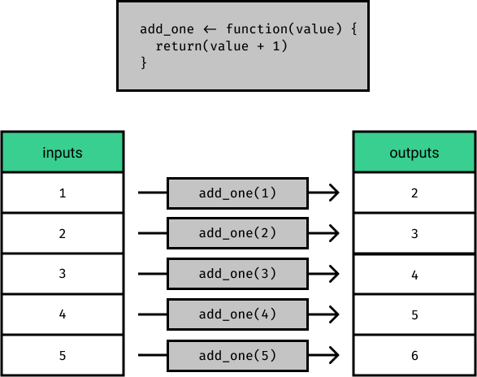

Our dataset is a collection of test scores of four different students. Each student took five different tests for three subjects: writing, math and science. Over the course of this lesson, we’ll perform different analytical tasks that will require us to vectorize different functions.
# A tibble: 3 × 6
names assignment_number writing_score math_score science_score math_extra_…¹
<chr> <dbl> <chr> <chr> <chr> <chr>
1 Michael 1 56% 50% 79% High
2 Michael 2 84% 59% 72% None
3 Michael 3 64% 84% 78% Low
# … with abbreviated variable name ¹math_extra_credit
Challenge One
Each of the student scores are written as strings can’t be used in math
Need to convert them to numbers to be useful in calculations
Need to vectorize over multiple columns
Next Step
Create a function called format_score() that:
Takes in a single string as an input.
Removes the % sign from the string.
Converts the string into a number using the as.numeric() function. This useful function takes in a string and will convert it into a number if it resembles a number.
Outputs that number (e.g. The string “74%” should be converted to the number 74.)
Pass percent_string into the format_score()function and assign the output to the variable converted_string
Creating a Custom Function
format_score <-function(score){ fmt_string <-str_replace(score, "%", "") num <-as.numeric(fmt_string)return(num)}my_string <-"74%"format_score(my_string)
[1] 74
Vectoring a function
The diagram illustrates vectorization of a function called add_one()

Map Function
map() is from purrr package
It’s used to vectorize functions
It takes two arguments
A vector or a list
The function to be applied
Example
# Input vectorinputs <-1:5# Function to vectorizeadd_one <-function(value) {return(value +1)}outputs <-map(inputs, add_one)typeof(outputs)
In the student_scores dataset, we have another column called math_extra_credit. This column is a string, and it represents the amount of extra credit a student earned on a particular math test. Depending on how much extra credit is earned (“None,” “Low,” or “High”), the student can increase their math score. We need to account for this when we calculate the math score.
Task
Create a new function called add_extra_credit(). It should take two inputs: the first one should be a number (representing a score) and the second one should be a string (representing an amount of extra credit)
If the string is “None”: Don’t add any extra points to the number input.
If the string is “Low”: Add 1 extra point to the number input
If the string is “High”: Add 5 extra points to the number input
Using the add_extra_credit()Create a new column in the student_scores dataset called adjusted_math_score. This column should represent the math score that a student received on a test, accounting for the extra credit they got on the test.
The new_math_score column contains the math score in number format.
The math_extra_credit column contains the strings describing how much extra credit was earned.
Make sure to use the unlist() function to convert the result from map2() into a vector.